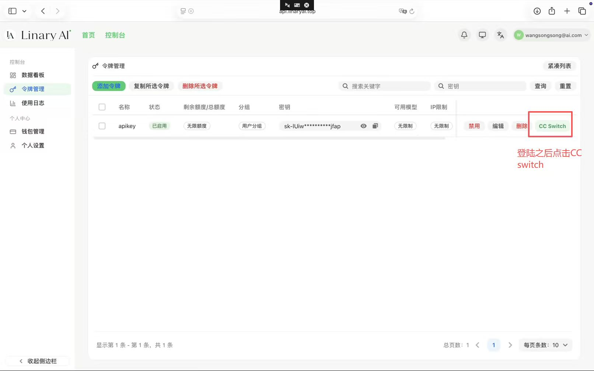
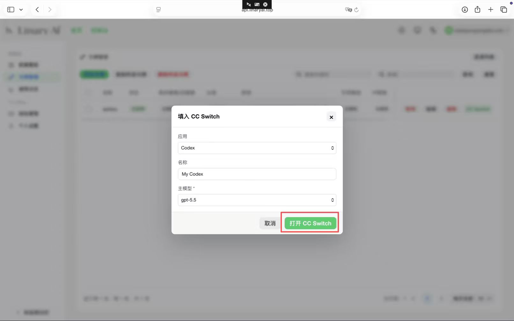
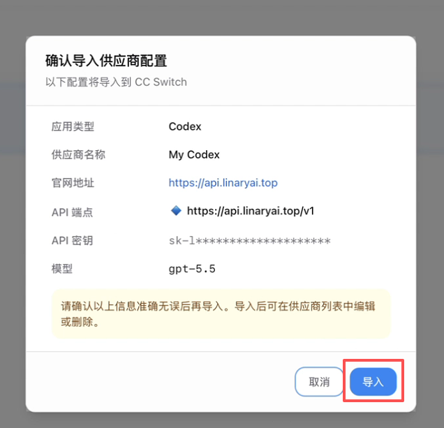
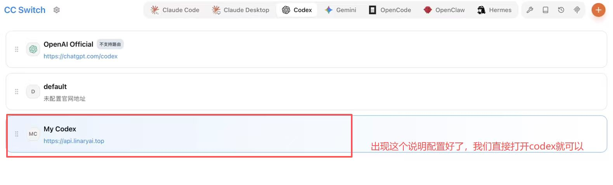

Windows x64
适合大多数 Intel / AMD Windows 10/11 电脑。
下载 Windows x64登录 LinaryAI 控制台后，在令牌管理里点击 CC Switch，确认导入供应商配置。完成后，Codex 会通过 https://api.linaryai.top/v1 使用你的 LinaryAI 令牌。
官方下载
下载入口来自 CC Switch 官方 GitHub Releases。macOS 当前是一个通用 DMG，Apple Silicon 和 Intel Mac 使用同一个安装包。
适合大多数 Intel / AMD Windows 10/11 电脑。
下载 Windows x64适合 ARM 芯片 Windows 设备，普通电脑不需要选这个。
下载 Windows ARM64适合 M1、M2、M3、M4 等 Apple Silicon Mac。
下载 Mac M 系列适合 Intel 芯片 Mac，官方当前使用同一个通用 DMG。
下载 Mac Intel图文步骤
安装 CC Switch 后，按下面流程从 LinaryAI 令牌管理一键导入配置。整个过程中不需要把 API Key 粘贴到网页，只需要在 LinaryAI 控制台里点击对应按钮。

登录 api.linaryai.top 后进入控制台，打开左侧的「令牌管理」。在要使用的令牌行右侧点击「CC Switch」。

弹窗里应用选择「Codex」，名称可以保持 My Codex，主模型建议选择 gpt-5.5，然后点击「打开 CC Switch」。

CC Switch 会展示即将导入的信息。重点确认官网地址为 https://api.linaryai.top，API 端点为 https://api.linaryai.top/v1，确认后点击「导入」。

导入成功后，在 CC Switch 的 Codex 标签下会出现 My Codex。看到这个配置后，直接打开 Codex 使用即可。
令牌只会在 LinaryAI 控制台和 CC Switch 导入流程里使用。截图、教程、报错日志发给别人前，记得确认密钥已打码。
排查
回到 CC Switch 的 Codex 标签，确认当前使用的是 My Codex，且官网地址显示为 https://api.linaryai.top。旧的 DeepSeek/default 配置可以先不要选中。
按教程保持 gpt-5.5 即可。后续如果 LinaryAI 控制台调整可用模型，再回到 CC Switch 编辑这个供应商配置。
确认电脑已经安装 CC Switch，并允许浏览器打开外部应用。如果浏览器拦截，重新点击「打开 CC Switch」并选择允许。
如果 Codex 已经能通过 CC Switch 使用 LinaryAI，就不需要重复配置。若还没有 Codex 或插件包，可以回到安装助手下载对应系统版本。